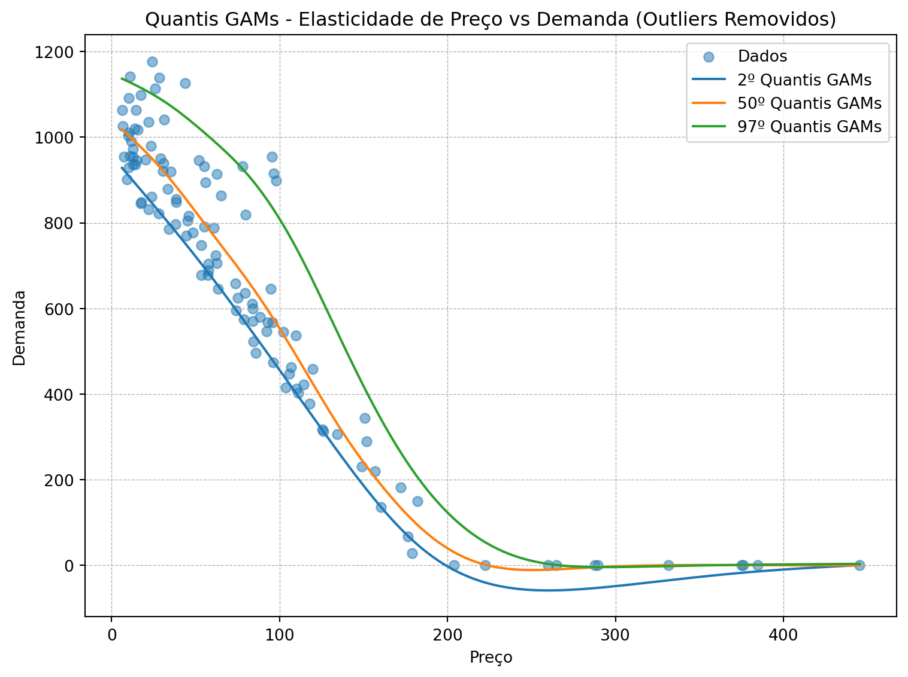

import pandas as pd
import numpy as np
import matplotlib.pyplot as plt
from pygam import s, ExpectileGAM
import warnings
warnings.filterwarnings('ignore')
from IPython.core.display import display, HTML
# Definir o tamanho padrão das imagens
display(HTML("<style>.rendered_html img {max-width:80%; height:auto;}</style>"))Criando os dados
#gerando os dados
np.random.seed(0)
n=100
price = np.sort(np.random.exponential(scale=100,size=n))
quantity = 1000 - 5 * price + np.random.normal(loc=0, scale=50,size=n)
quantity = quantity.clip(min=0)Esse trecho de código está criando dados simulados para as variáveis price e quantity com base em distribuições aleatórias. Vamos analisar linha por linha:
np.random.seed(0): Configura a semente para o gerador de números aleatórios do NumPy. Isso garante que os números aleatórios gerados sejam os mesmos em diferentes execuções do código, tornando os resultados reproduzíveis.
n = 100: Define o tamanho da amostra como 100.
price = np.sort(np.random.exponential(scale=100, size=n)): Gera uma amostra de 100 valores a partir de uma distribuição exponencial com uma escala de 100. Em seguida, esses valores são ordenados em ordem crescente usando np.sort() e atribuídos à variável price.
quantity = 1000 - 5 * price + np.random.normal(loc=0, scale=50, size=n): Gera valores para a variável quantity com base em uma relação linear com a variável price. Adiciona-se ruído normal à relação linear usando np.random.normal() com uma média (loc) de 0 e um desvio padrão (scale) de 50.
quantity = quantity.clip(min=0): Substitui qualquer valor negativo em quantity por 0. Isso é feito usando o método clip(), garantindo que a quantidade não seja negativa.
#adicionando outliers
n_outliers = 10
outliers_prices = np.random.uniform(5,50,n_outliers)
outliers_quantity = 1100 + np.random.normal(loc=0,scale=50,size=n_outliers)
price = np.concatenate([price, outliers_prices])
quantity = np.concatenate([quantity, outliers_quantity])Este trecho de código adiciona outliers aos dados simulados já gerados para as variáveis price e quantity. Vamos analisar linha por linha:
n_outliers = 10: Define o número de outliers como 10.
outliers_prices = np.random.uniform(5, 50, n_outliers): Gera 10 valores uniformemente distribuídos entre 5 e 50, representando os preços dos outliers.
outliers_quantity = 1100 + np.random.normal(loc=0, scale=50, size=n_outliers): Gera 10 valores para as quantidades dos outliers, adicionando ruído normal à média de 1100, com um desvio padrão de 50.
price = np.concatenate([price, outliers_prices]): Concatena os valores de outliers_prices ao final da array price. Isso adiciona os outliers à variável price.
quantity = np.concatenate([quantity, outliers_quantity]): Concatena os valores de outliers_quantity ao final da array quantity. Isso adiciona os outliers à variável quantity.
#adicionando outliers
n_outliers = 10
outliers_prices = np.random.uniform(51,100,n_outliers)
outliers_quantity = 900 + np.random.normal(loc=0,scale=50,size=n_outliers)
price = np.concatenate([price, outliers_prices])
quantity = np.concatenate([quantity, outliers_quantity])Neste trecho de código, você está adicionando mais 10 outliers às variáveis price e quantity. Vamos analisar cada linha:
n_outliers = 10: Define novamente o número de outliers como 10.
outliers_prices = np.random.uniform(51, 100, n_outliers): Gera 10 valores uniformemente distribuídos entre 51 e 100, representando os preços dos novos outliers.
outliers_quantity = 900 + np.random.normal(loc=0, scale=50, size=n_outliers): Gera 10 valores para as quantidades dos novos outliers, adicionando ruído normal à média de 900, com um desvio padrão de 50.
price = np.concatenate([price, outliers_prices]): Concatena os valores de outliers_prices ao final da array price. Isso adiciona os novos outliers à variável price.
quantity = np.concatenate([quantity, outliers_quantity]): Concatena os valores de outliers_quantity ao final da array quantity. Isso adiciona os novos outliers à variável quantity.
df = pd.DataFrame({
'Price' : price,
'Quantity': quantity
})Este trecho de código cria um DataFrame do Pandas chamado df a partir das variáveis price e quantity. Vamos entender cada parte:
filtrando
df = df[df['Price'] >= 5]cruiando o modelo
reshape data
x = df[['Price']]
y = df['Quantity']GAMs quantile
quantiles = [0.025, 0.5, 0.975]
gam_results = {}for q in quantiles:
gam = ExpectileGAM(s(0),expectile=q)
gam.fit(x,y)
gam_results[q] = gam
#gam_resultsVisualizando
# Scaterplot
plt.figure(figsize=(8,6))
plt.scatter(df['Price'], df['Quantity'], alpha=0.5, label='Data Points')
# plot quantile GAMs
xx = np.linspace(df['Price'].min(), df['Price'].max(), 1000).reshape(-1,1)
for q, gam in gam_results.items():
plt.plot(xx, gam.predict(xx), label=f'{int(q*100)}th Quantile GAM')
#add title and labels
plt.xlabel('Price')
plt.ylabel('Quantity Demanded')
plt.title('Quantile GAMs on Price Elasticity of Demand (Outliers Removed)')
plt.legend()
plt.grid(True, which='both',
linestyle='--', linewidth=0.5)
plt.tight_layout()
plt.show()